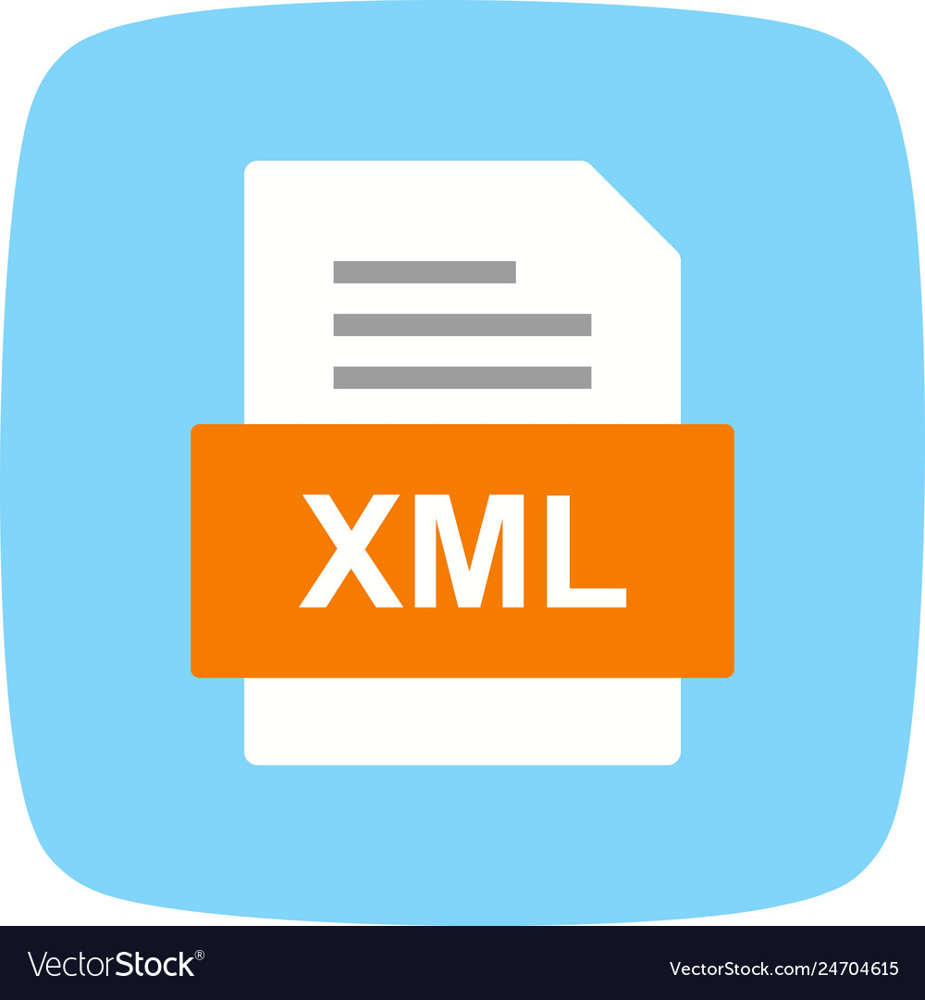

Introducción al XML
XML, que significa Lenguaje de Marcado Extensible (eXtensible Markup Language), es un lenguaje de marcado diseñado para almacenar y transportar datos de manera estructurada. Fue desarrollado por el World Wide Web Consortium (W3C) en 1996. XML se utiliza para representar y organizar datos de forma legible tanto para humanos como para máquinas, utilizando etiquetas para marcar elementos de datos y atributos para proporcionar información adicional sobre esos elementos. XML se ha utilizado en una amplia gama de aplicaciones, desde la representación de datos en documentos HTML hasta la configuración de aplicaciones y sistemas complejos. Es especialmente útil en la integración de sistemas empresariales, donde se utiliza para intercambiar datos entre diferentes plataformas y sistemas heterogéneos.
Introducción al JSON
JSON, que significa Notación de Objetos de JavaScript (JavaScript Object Notation), es un formato de intercambio de datos ligero y fácil de leer. Fue creado por Douglas Crockford a principios de la década de 2000. JSON se basa en la sintaxis de los objetos literales de JavaScript, lo que lo hace fácilmente interpretable por los programas escritos en JavaScript. Se utiliza comúnmente para intercambiar datos entre un servidor y un navegador web, así como entre diferentes servicios web y APIs. JSON es popular debido a su simplicidad y su capacidad para representar datos estructurados de manera clara y concisa, lo que lo hace ideal para aplicaciones web y servicios API.